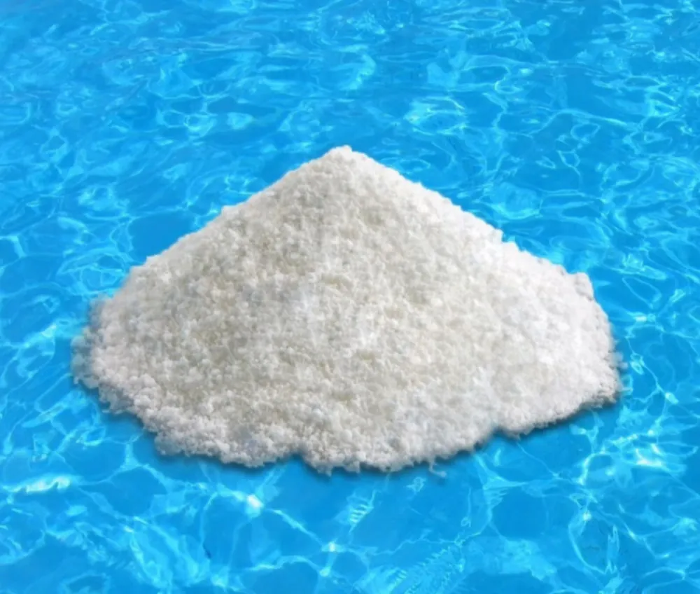

Cloro Granulado Rápido (Dicloro)
Precio por presentación: a granel x 50 kg o fraccionado x 45 kg:
$265.000Precios vigentes · Noviembre 2026 · Compra mínima total: 50 kg. Consultá stock y entrega.
Ver oferta Minorista de 50 kgCloro de disolución rápida, conocido técnicamente como Dicloro. Para piletas de fibra o pintadas.

También conocido técnicamente como Dicloro.
Es la opción que recomendamos para piletas de fibra o pintadas cuando se busca mantenimiento, recuperación del agua o un tratamiento de choque.
Disolver previamente en un balde con agua y distribuir al atardecer, sin bañistas.
Referencia ANDYCLOR: 80 g cada 40.000 litros. En temporada alta, uso diario; en temporada baja, uso semanal. Ajustar según estado del agua y uso de la pileta.
Sí. En la línea ANDYCLOR, Cloro Instantáneo y “Cloro Granulado de Disolución Rápida” nombran al producto conocido técnicamente como Dicloro.
El fraccionado de 1 kg viene en bolsa. Indicá cuántos kilos necesitás y tu localidad para confirmar la presentación disponible, el precio y la entrega. También podés consultar por 20 kg.
Precio por presentación: a granel x 50 kg o fraccionado x 45 kg:
$265.000Precios vigentes · Noviembre 2026 · Compra mínima total: 50 kg. Consultá stock y entrega.
Ver oferta Minorista de 50 kg